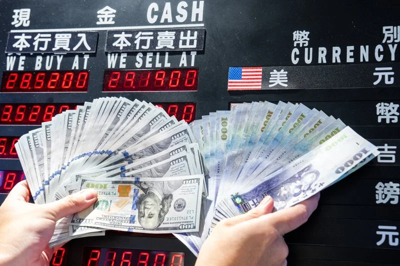

2026-03-19 09:23 中央社／記者 黃義展 ／台北19日電

中東戰火對金融市場的衝擊略顯鈍化，在輝達（NVIDIA）GTC大會題材助攻下，股匯市今天
同步走揚，台股漲逾500點， 新台幣兌美元
量縮小漲，收盤收31.832元，升值5.3分，匯價連2升。
地緣政治烏雲未散，不過輝達（NVIDIA）GTC大會帶動AI題材發酵，台股今天走勢強勁，終場收在34348.58點，上漲512.01點。 外資呈現連2買，今天回補93.26億元。美元指數漲多拉回，國際股市反彈，均有利支撐匯市行情。新台幣兌美元今天開盤價為31.85元，最高31.81元、最低31.86元， 波動區間縮窄，成交量能也大幅萎縮，台北及元太外匯市場總成交金額收斂至14.345億美元。
外匯交易員表示，中東戰火延燒，國際美元續於高檔震盪，且能源價格衝擊持續發酵，儘管新台幣跌深反彈，短線仍難擺脫偏弱格局。 央行今天公布主要貨幣變動，由於美元指數續挫0.30%，主要亞幣多走揚，新台幣、人民幣同步升值0.17%，日圓上漲0.29%，韓元升值0.30%。 外匯交易員指出，美國聯準會會議結論即將出爐，市場屏息以待，匯市轉趨盤整，投資人聚焦聯準會對於通膨影響及貨幣政策路徑的看法； 由於國際油價上漲，引發通膨疑慮，部分機構認為聯準會可能延後降息，聯準會官員釋放的訊號格外受關注，待會議結果出爐後，市場情緒反 應可能會帶來新的波動。